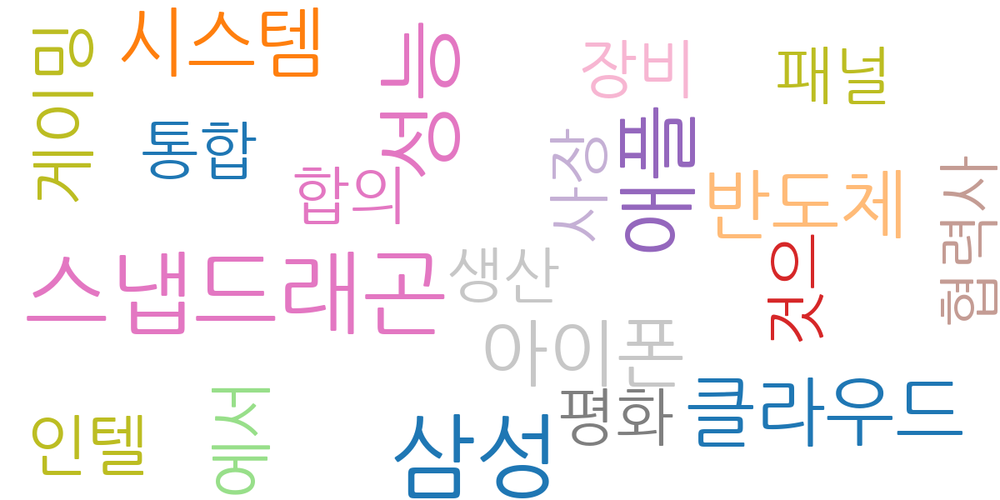
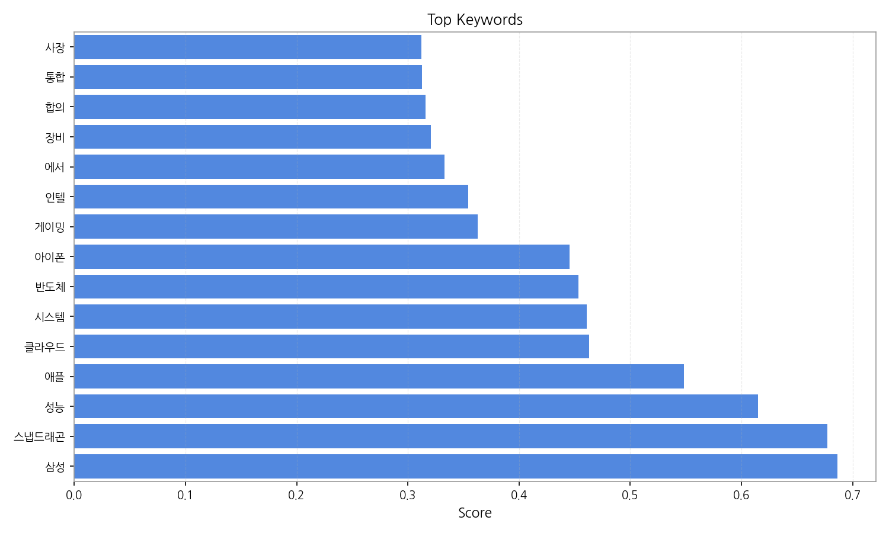
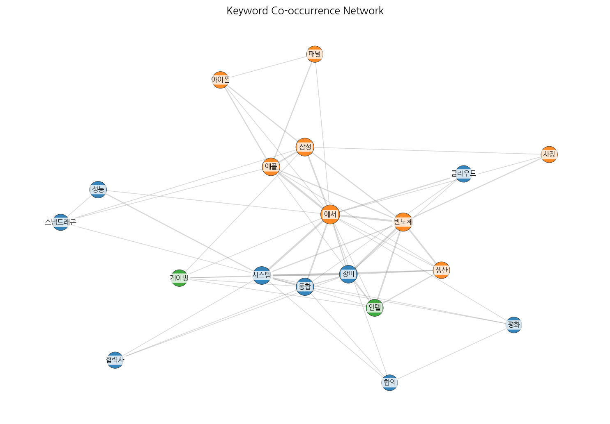
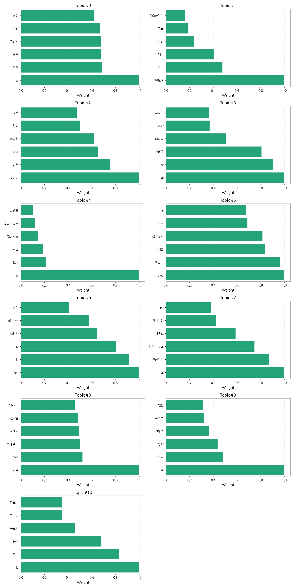
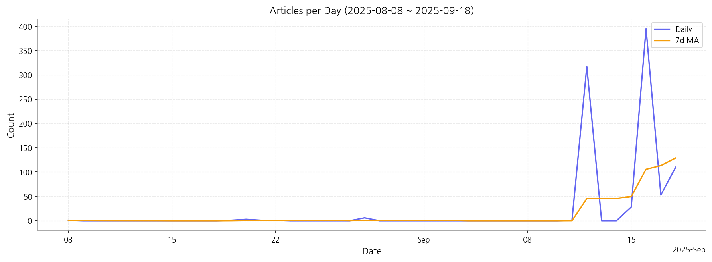

1) 상위 토픽을 3~5개 주제로 묶어 핵심 맥락 설명(2~3문장)
데이터는 AI 기술, 디스플레이 산업(OLED 포함), 그리고 삼성전자와 LG전자의 사업 전략에 대한 한국 뉴스 기사를 분석한 결과입니다. AI는 PC 성능 향상, 새로운 서비스 개발, 기업의 미래 사업 전략 등 다양한 맥락에서 언급되며, OLED는 삼성전자와 LG전자의 경쟁과 기술 개발, 시장 동향을 보여주는 주요 키워드입니다. 반도체 장비 및 기술 또한 삼성전자의 사업 전략과 밀접하게 연관되어 있으며, 전반적으로 한국 주요 기업들의 기술 경쟁력과 미래 성장 전략에 대한 뉴스 보도가 집중되어 있음을 알 수 있습니다.
2) 최근 변화/스파이크가 있으면 2문장으로 짚기
9월 12일과 16일 기사 수가 급증(317건, 395건)하는 스파이크 현상이 관찰됩니다. 이는 특정 시점에 AI, OLED, 반도체 등 주요 기술 관련 뉴스가 집중적으로 보도되었음을 시사하며, 이는 신제품 출시, 기술 발표, 또는 중요한 산업 동향 발표 등의 이벤트와 관련이 있을 가능성이 높습니다.
3) 실무 인사이트 3가지 bullet(구체적 액션)

| Rank | Keyword | Score |
|---|---|---|
| 1 | 삼성 | 0.686 |
| 2 | 스냅드래곤 | 0.677 |
| 3 | 성능 | 0.615 |
| 4 | 애플 | 0.548 |
| 5 | 클라우드 | 0.463 |
| 6 | 시스템 | 0.461 |
| 7 | 반도체 | 0.453 |
| 8 | 아이폰 | 0.445 |
| 9 | 게이밍 | 0.363 |
| 10 | 인텔 | 0.354 |
| 11 | 에서 | 0.333 |
| 12 | 장비 | 0.321 |
| 13 | 합의 | 0.316 |
| 14 | 통합 | 0.313 |
| 15 | 사장 | 0.312 |




1) 상위 토픽을 3~5개 주제로 묶어 핵심 맥락 설명(2~3문장)
데이터는 AI 기술, 디스플레이 산업(OLED 포함), 그리고 삼성전자와 LG전자의 사업 전략에 대한 한국 뉴스 기사를 분석한 결과입니다. AI는 PC 성능 향상, 새로운 서비스 개발, 기업의 미래 사업 전략 등 다양한 맥락에서 언급되며, OLED는 삼성전자와 LG전자의 경쟁과 기술 개발, 시장 동향을 보여주는 주요 키워드입니다. 반도체 장비 및 기술 또한 삼성전자의 사업 전략과 밀접하게 연관되어 있으며, 전반적으로 한국 주요 기업들의 기술 경쟁력과 미래 성장 전략에 대한 뉴스 보도가 집중되어 있음을 알 수 있습니다.
2) 최근 변화/스파이크가 있으면 2문장으로 짚기
9월 12일과 16일 기사 수가 급증(317건, 395건)하는 스파이크 현상이 관찰됩니다. 이는 특정 시점에 AI, OLED, 반도체 등 주요 기술 관련 뉴스가 집중적으로 보도되었음을 시사하며, 이는 신제품 출시, 기술 발표, 또는 중요한 산업 동향 발표 등의 이벤트와 관련이 있을 가능성이 높습니다.
3) 실무 인사이트 3가지 bullet(구체적 액션)
| Idea | Target | Value Prop | Score |
|---|---|---|---|
| AI 기반 디스플레이 품질 검사 플랫폼 (KR) | 한국 내 디스플레이 패널 제조 기업 (LG디스플레이, 삼성디스플레이 등) / 생산 관리 부서 / 대기업 | AI 기반 자동화 시스템을 통해 불량률을 최소화하고 생산성을 극대화합니다. 경쟁사 대비 정확도 높은 AI 알고리즘을 통해 차별화된 품질 검사를 제공합니다. 실시간 데이터 분석을 통한 예측 정비로 유지보수 비용을 절감합니다. | 4.50 |
| 전자부품 조달 플랫폼 구축 및 파트너십 (EU) | EU 지역 전자 제조 기업 / 구매 담당자 / 중견·대기업 | 원스톱 전자 부품 조달 플랫폼을 통해 효율적인 구매 및 관리를 지원합니다. 다양한 공급업체와의 협력을 통해 안정적인 부품 공급을 보장합니다. 경쟁사 대비 투명하고 신뢰할 수 있는 조달 시스템을 제공합니다. 최근 글로벌 공급망 불안정에 대한 해결책을 제공합니다. | 4.20 |
| AI 기반 스마트 팩토리 솔루션 (KR) | 한국 내 전자 제조 기업 / 생산 관리 부서 / 중견·대기업 | AI 기반의 통합적인 스마트 팩토리 솔루션을 제공하여 생산성을 향상시키고 원가를 절감합니다. 경쟁사 대비 사용자 친화적인 인터페이스와 맞춤형 서비스를 제공합니다. 최근 AI 기술 발전에 따라 더욱 정교하고 효율적인 생산 관리가 가능해졌습니다. | 4.00 |
| OLED 사이니지 맞춤형 콘텐츠 제작 서비스 (JP) | 일본 내 사이니지 설치 업체 / 광고 대행사 / 대형 쇼핑몰, 호텔 등 / 중소기업 | 고객의 요구에 맞춘 맞춤형 OLED 사이니지 콘텐츠를 신속하고 효율적으로 제작합니다. 다양한 디자인 템플릿과 편집 도구를 제공하여 사용 편의성을 높였습니다. 경쟁사 대비 빠른 제작 시간과 합리적인 가격으로 차별화를 제공합니다. | 3.80 |
| 모빌리티 디스플레이 시장 분석 및 예측 서비스 (KR) | 자동차 부품 제조사 / 디스플레이 제조사 / 투자사 / 중견·대기업 | 빅데이터 분석 및 AI 기반 예측 모델을 활용하여 정확한 시장 동향 분석 및 미래 예측을 제공합니다. 경쟁사 대비 정교한 예측 모델과 시각화된 데이터를 제공하여 의사결정을 지원합니다. 최근 전기차 시장 확대 및 자율주행 기술 발전에 따른 모빌리티 디스플레이 시장의 변화를 예측합니다. | 3.50 |